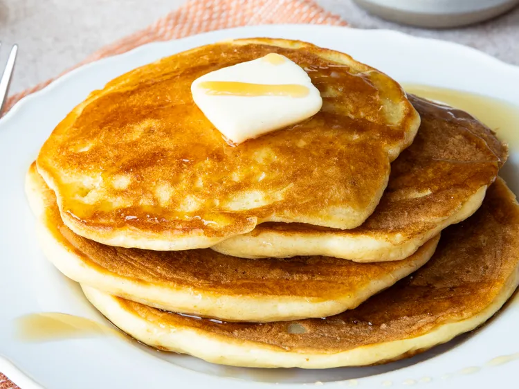

Greek Yoghurt Pancakes

Description
These Greek yogurt pancakes are a quick and simple breakfast made with just four ingredients.
The Greek yogurt gives them a rich, fluffy texture while adding extra protein, and the whole
recipe can be prepared in about 15 minutes.
Ingredients
- 6 ounces Greek yogurt
- large egg
- ½ cup all-purpose flour
- 1 teaspoon baking soda
Steps
- Whisk yogurt in a medium bowl until smooth and creamy. Add egg and whisk to combine.
-
Combine flour and baking soda in a small bowl; add to yogurt mixture and whisk until batter
is smooth.
- Heat a lightly oiled griddle over medium-high heat.
-
Drop batter by large spoonfuls onto the hot griddle and cook until bubbles form and the
edges are dry, 3 to 4 minutes.
- Flip and cook until browned on the other side, 2 to 3 minutes.
- Repeat with remaining batter.
Return Home